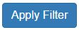
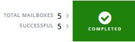

NetApp SaaS Backup for Office 365を使用したデータの表示 GitHubで編集 ドキュメントの変更をリクエストする
寄稿者
特定の結果のデータをフィルターし、インライン検索を使用して必要なものを見つけ、すべてのアクティビティのリストのアクティビティログを表示できます。
ユーザー定義フィルターの作成
メールボックス、サイト、またはMySitesのビューをフィルター処理して、特定の条件に一致する結果のみを表示できます。たとえば、特定の国のメールボックスとその国の特定の部門のみを表示するようにフィルターを設定できます。
ダッシュボードから、フィルターを作成するサービスのボックスで[ 保護済み ]または[ 保護なし ]の上の数字をクリックします。
PROTECTEDの上の数値は、バックアップポリシーによって現在保護されているメールボックス、MySite、またはグループの数を示しています。 UNPROTECTEDの上の数値は、バックアップポリシーによって保護されていないメールボックス、MySite、またはグループの数を示します。

フィルターをクリックします 。

[ 選択 ]ドロップダウンメニューをクリックし、 選択したフィルターを選択します。
Microsoft SharePoint Onlineの場合、テンプレートIDでフィルタリングできます。テンプレートIDを入力して検索するか、ドロップダウンメニューから選択します。
他のすべてのサービスについては、グループ、国、オフィス、部門、役職、ドメイン、または国でフィルタリングできます。セキュリティグループがある場合、それらはフィルタリングオプションとしてもリストされます。2番目のドロップダウンメニューには、選択したフィルターに基づいた選択肢が表示されます。たとえば、最初のフィルタとしてグループを選択した場合、バックアップポリシーグループ層のいずれかをセカンダリフィルタとして選択できます。 image：select_filter.jpg [フィルターオプションの最初のセットのスクリーンショット] 検索フィールドが表示されます。 。検索条件を入力します。 。さらにフィルターを追加する場合は、[フィルターを追加]をクリックして選択します。 。 [フィルタの適用]をクリックします。 フィルタ結果が表示されます。
Microsoft Exchange Online内で検索を実行する
特定のコンテンツについて、個々のメールボックス内でインライン検索を実行できます。これは、Office 365グループの一部であるメールボックスにも適用されます。
ダッシュボードで、[Exchange]ボックスの[ PROTECTED]または[ UNPROTECTED ]の上の数字をクリックします。
保護されたメールボックスを検索する場合は、検索を実行する必要があるメールアドレスをクリックします。
検索する必要のあるカテゴリ（メール、タスク、連絡先、カレンダー、またはその他）を選択します。
検索フィールドの横にあるドロップダウンメニューからファイルまたはフォルダーを選択して、 ファイルまたはフォルダーを検索しているかどうかを示します。
検索フィールドに検索文字列を入力します。
検索は自動的に実行され、検索文字列を入力すると結果が表示されます。
保護されていないメールボックスを検索する場合は、検索するメールボックスを選択します。
検索フィールドに検索文字列を入力します。
検索は自動的に実行され、検索文字列を入力すると結果が表示されます。
Microsoft OneDrive for Business内で検索を実行する
特定のコンテンツについて、個々のMySite内でインライン検索を実行できます。
ダッシュボードから、OneDriveボックスの[ PROTECTED ]の上の数字をクリックします。
検索を実行する必要があるMySiteをクリックします。
検索する必要があるファイルをクリックします。
検索フィールドに検索文字列を入力します。
検索は自動的に実行され、検索文字列を入力すると結果が表示されます。
Microsoft SharePoint Online内で検索を実行する
特定のコンテンツについて、個々のMySite内でインライン検索を実行できます。これは、Office 365グループの一部であるサイトにも適用されます。
ダッシュボードから、[SharePointで保護済み ]ボックスの上の数字をクリックします。
検索を実行する必要があるサイトをクリックします。
検索する必要があるコンテンツカテゴリをクリックします。
検索フィールドに検索文字列を入力します。
検索は自動的に実行され、検索文字列を入力すると結果が表示されます。
ジョブ履歴を表示する
NetApp SaaS Backup for Office 365は、ジョブタイプ、サービス、開始時間、終了時間、完了ステータスを含むすべてのジョブのログを保存します。
左側のナビゲーションペインで[ レポート]をクリックします。
すべてのSaaSバックアップジョブのリストが、[ ジョブ履歴 ]タブに表示されます。結果をフィルタリングするには、「フィルター」をクリックします 。
[ 選択 ]ドロップダウンメニューをクリックし、フィルターを選択します。
ポリシー、サービス、またはタイプでフィルタリングできます。フィルタを選択すると、検索フィールドが表示されます。検索条件を入力します。
さらにフィルターを追加する場合は、 フィルターの追加をクリックします。
[ フィルターの適用]をクリックします 。

フィルタ結果が表示されます。ジョブをクリックして、ビューを展開し、ジョブの詳細を追加します。
アクティビティログの表示
SaaS Backup for Office 365内で発生するすべてのアクティビティのログが保存されます。ログには、実行された各アクションの日付と、アクションを実行したユーザーの名前が含まれます。サービスおよびイベントでアクティビティログをフィルタリングできます。たとえば、Microsoft Exchange Onlineで発生したすべての復元操作を確認する必要がある場合、アクティビティログをフィルター処理して、特定の結果を表示できます。
左側のナビゲーションペインで[ レポート]をクリックします。
[ アクティビティログ ]タブをクリックします。
Office 365アクティビティのすべてのSaaSバックアップのリストが表示されます。結果をフィルタリングするには、「フィルター」をクリックします 。
[ 選択 ]ドロップダウンメニューをクリックし、フィルターを選択します。
サービスまたはイベントでフィルタリングできます。フィルタを選択すると、検索フィールドが表示されます。検索条件を入力します。
さらにフィルターを追加する場合は、 フィルターの追加をクリックします。
[ フィルターの適用]をクリックします 。
フィルタ結果が表示されます。
アクティビティログのダウンロード
SaaS Backup for Office 365内で発生するすべてのアクティビティのログが保存されます。ログには、実行された各アクションの日付と、アクションを実行したユーザーの名前が含まれます。アクティビティログを.csvファイルにダウンロードできます。
左側のナビゲーションペインで[ レポート]をクリックします。
[ アクティビティログ ]タブをクリックします。
Office 365アクティビティのすべてのSaaSバックアップのリストが表示されます。ダウンロードをクリックします。

アクティビティログは.csvファイルとしてダウンロードされます。
完了したジョブのログをダウンロードする
正常に完了したジョブのExcelスプレッドシートをダウンロードできます。
左側のナビゲーションペインで[ ジョブ]をクリックします

ダウンロードする最近完了したジョブをクリックします。
正常に完了したジョブの数の下にある「 成功」をクリックします。
右上の[ ダウンロード]をクリックします。
ログがダウンロードされます